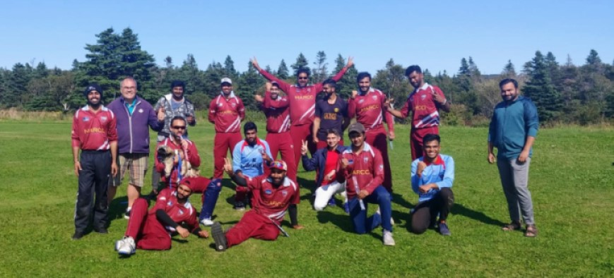

Memorial University of Newfoundland
Bachelor of Computer Science
GPA: 3.3| Expected Graduation 2023
Education
COMP 1000 Introduction to Computer Science.
COMP 1001 Introduction to Programming.
COMP 1002 Introduction to Logic For CS.
COMP 1003 Foundations of Computing Systems.
COMP 2001 Object-Oriented Programming.
COMP 2002 Data Structures and Algorithms.
COMP 2003 Computer Architecture.
COMP 2004 Introduction to Operating Systems
COMP 2005 Software Engineering.
COMP 2006 Computer Networking
COMP 2007 Introduction to Information Management.
COMP 2008 Social Issues and Professional Practice.
Extracurricular
Successfully Completed 150KM Solo Bikepacking trip on my Rockymountain Bicycle from "St John's" to "La manche suspension bridge".
Camped over night in a tent and biked back the next day.


Played in NL-Avernger's cricket Team. And Won the 2020 Summer League for 20 and 40 overs.
